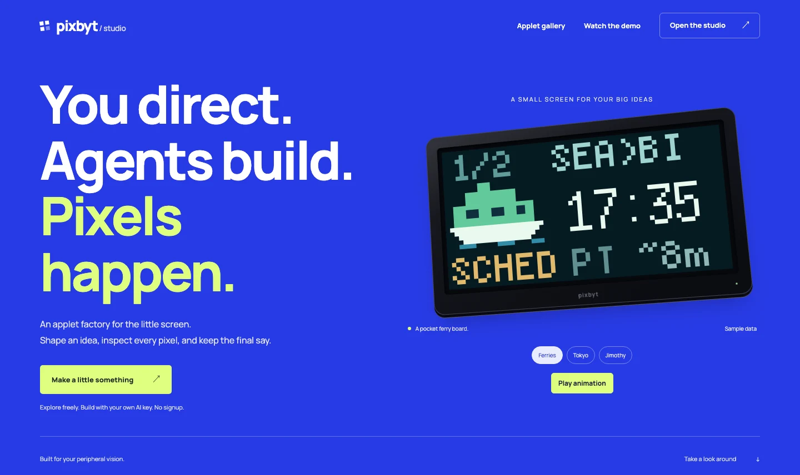
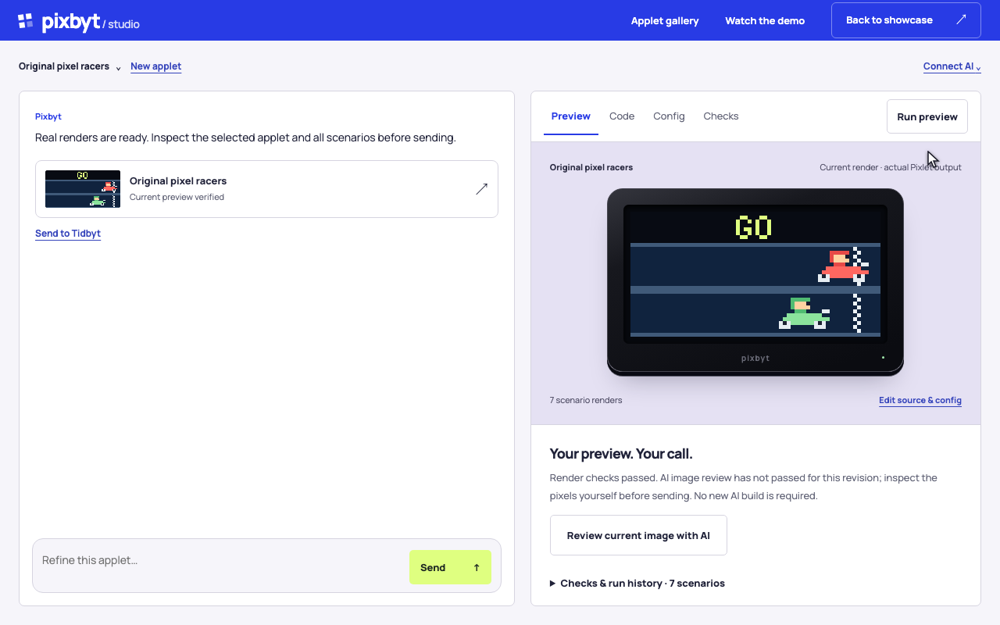
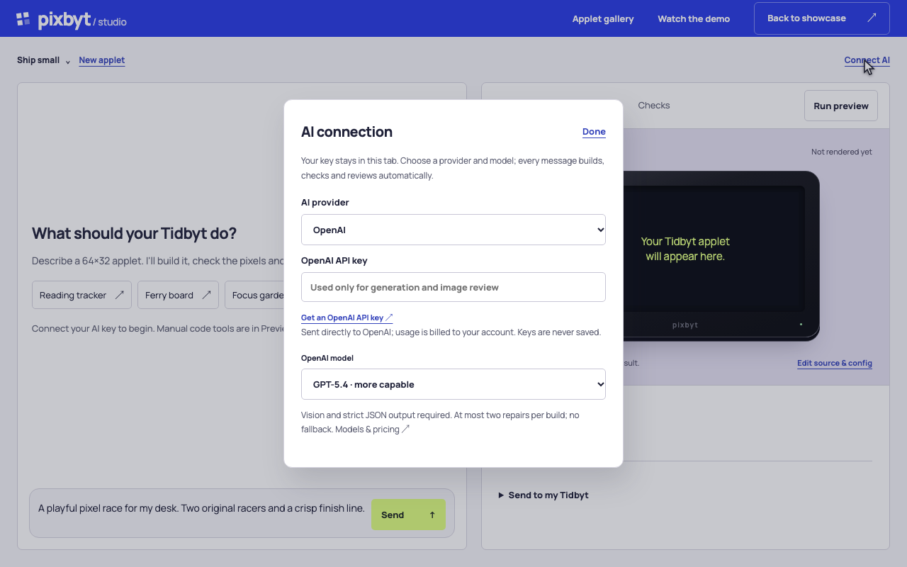

Pixbyt.
- TypeScript
- Vite
- Node.js
- Pixlet
- Python
- OpenAI
- GitHub Copilot SDK
- Vercel Sandbox
An applet factory for a little screen. Describe what you want, refine it in conversation, and inspect real pixels before sending anything to your Tidbyt.
No signup to explore or render manual source. Connect your OpenAI API key or supported GitHub Copilot token for AI builds. Device sends use your own Tidbyt credentials. Studio source is private; repository access requires permission.



One applet.
One conversation.
I built Studio for people who want to make something personal for a Tidbyt's 64×32 display. Describe the applet and choose Send. Generation, native scenario checks, image review, and bounded repairs run together; progress and the final rendered preview appear in the thread. Stop cancels a run without losing your next draft.
Each local applet keeps its own conversation and editable source. Switch applets from the compact picker, or choose New applet to start fresh. Code, configuration, checks, and backups remain available as secondary tools rather than a sequence of buttons you have to orchestrate.
To deliver Studio, I directed coding agents through research, build, test, visual review, and deploy gates. That development workflow is distinct from the applet factory's in-product checks and explicit device-send confirmation.
The showcase offers a sample-data ferry board, a Tokyo transit concept, and Jimothy's original pixel art, with real rendered animations you can play or pause.
A factory with a quality bar.
Agents build. Executable gates check. You decide what to send. Follow-ups include current source, configuration, cases, conversation, and the latest diagnostic.
- Describe or refine
- Generate editable source
- Render & check scenarios
- Review pixels & repair
- Inspect verified preview
- Confirm named-device send
- Check the contract.
- Validate structured generation, bounded non-secret source/configuration, allowed imports, and quality cases. Normal, empty, long-text, and invalid-config fixtures are required; independently specified fallback expectations make failure states part of the task—not an afterthought.
- Render real pixels.
- Native Pixlet runs in a network-denied Vercel Sandbox. Every decoded frame must be non-solid, 64×32 WebP, within image and animation limits. Declared same/different cases compare decoded pixels. These checks catch execution and behavioral regressions, not beauty; a previous preview is not a new pass.
- Review what it made.
- The selected model receives actual scenario images and every decoded animation frame, with the brief, source, and fixture inputs. Copilot receives a lossless atlas of that evidence. Review covers fulfillment, hierarchy, legibility, contrast, and semantics across every scenario. Incomplete review is never labeled a pass. Critique guides repairs; it is advisory, not a guarantee of taste or permission to send.
- Repair within a budget.
- Generated validation errors, render failures, and failed visual findings share at most two repairs across the whole run, not two per stage. A failed turn retains editable output and concise source-line diagnostics. Retry uses the current inputs; unchanged broken output is not rerendered as a repair. Missing credentials preserve the failed turn and draft. Provider and infrastructure failures stop explicitly, without silent model fallback.
- Send only this preview.
- A current mechanically verified image and a signed render receipt bind the exact source, configuration, cases, and pixels. Edits or the 15-minute expiry require a fresh native render. Send to Tidbyt asks you to confirm the named device and exact preview; connecting a device alone sends nothing. Ownership is rechecked before sending, with no automatic resend after an ambiguous failure.
Manual path: Run preview renders exact current source and cases without an AI key or regeneration. You can inspect and send a mechanically verified preview without claiming AI review.
AI-assisted path: a submitted change runs generation, native checks, review, and bounded repair automatically. Review current image with AI can also critique manual edits without overwriting them. AI findings remain advisory; your explicit send confirmation is separate.
Exact limits & send boundary
Native output is limited to 200,000 bytes, 300 frames, and three seconds; device sends also respect a 192 KiB decoded-image limit. The signed receipt protects render integrity, not aesthetic quality. Reloading, switching applets, or importing a backup requires a fresh render before sending. Tidbyt API acceptance is not proof of physical receipt.


Make it yours.
Keep the source.
Starlark source, JSON configuration, and quality cases remain directly editable behind the conversation.
Applets, revisions, conversation, and unsent drafts are saved on this browser. Save now flushes the current work locally; export a backup to take it elsewhere. Clear saved data asks for confirmation. Keys stay in tab memory and are not saved or exported. Open Studio to explore the current controls.
Evidence you
can inspect.
The preview is only one part of the review. Scenario images expose what changes when inputs are missing, too long, or invalid. A selected configuration sits alongside those cases so you can judge the pixels you are actually about to approve.
Checks, run history, and exported evidence make the outcome inspectable. After edits, earlier evidence stays historical; it cannot authorize the next release.

Your model.
Your device.
Connect AI opens a compact settings dialog. Choose OpenAI with your own API key, or GitHub Copilot with your supported personal token. For Copilot, connect, load the available models, and explicitly select a vision-capable model. Provider and model choices stay separate; access and allowance depend on your account.
To connect a Tidbyt, copy the Device ID and API Token from the same Get API Key screen in the phone app. Studio verifies that device directly, rechecks ownership before a send, and asks you to confirm its name. No OAuth login is needed for this personal-device flow.


Small surface.
Deliberate systems.
Studio uses TypeScript and Vite for the interface, Node.js Vercel Functions for request handling, and ephemeral, network-denied Vercel Sandbox instances for native Pixlet rendering and Python image verification. OpenAI calls go directly to the provider; Copilot uses the GitHub Copilot SDK through an isolated request-only server path.
Generated applets use offline inputs, without hosted scheduling or live-feed fetching. Browser-local saves and exportable backups are separate from an explicit GitHub bundle save—not automatic sync or a cloud project database.
Watch the captioned walkthrough for a recorded look at manual applet source and native rendering.
Implementation & verification details
Native scenario results and model findings are separate evidence. An offline racer has passed seven actual native scenarios, rendering four animation frames over two seconds. The linked recording demonstrates manual source and native rendering, not paid-model execution or physical device delivery. Model critique is advisory; API acceptance alone does not establish what appeared on a device.
Built on an
existing foundation.
Studio is distinct from the original Go/HTMX Pixbyt application. That application supports authenticated applet management, community imports, Starlark/configuration editing, rendered previews, and manual image publishing to a configured Tidbyt device.
The original application's source and configuration live in Neon Postgres. Studio's browser-local applets and explicit GitHub bundle exports are separate workflows. Both source repositories remain private.